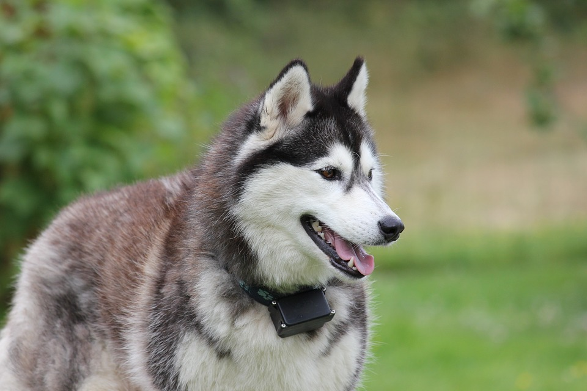
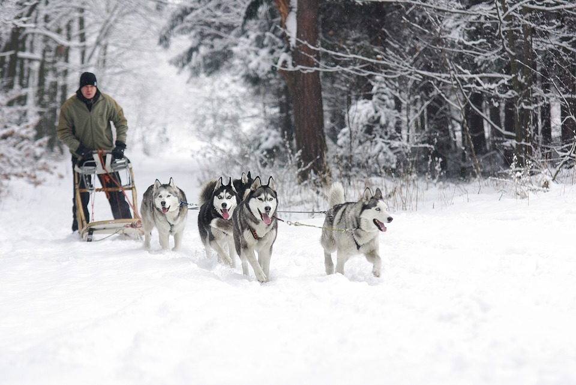

Huskies
Huskies have always been my second favorite dog type. I always enjoyed how regal they looked, and their strong eye colors.
Hard Workers
Huskies in my head are always the embodiment of hard workers, considering they make great sled dogs. Maybe this idea came from the kids' movie Balto but I still think it fits them quite well.